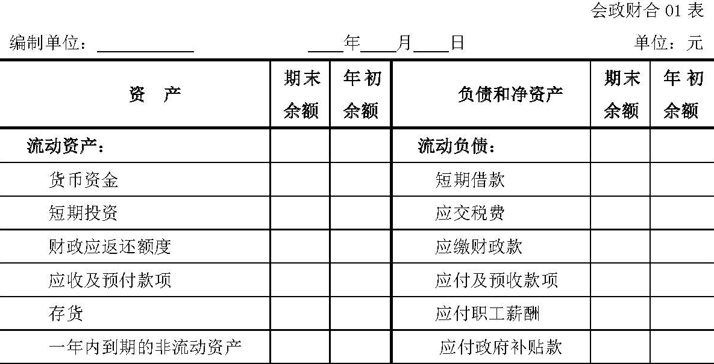
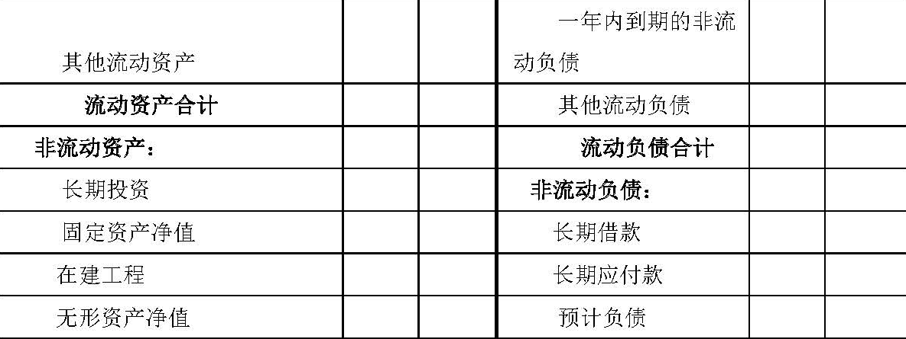
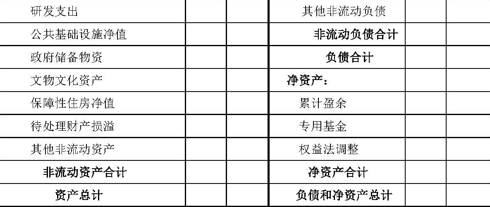
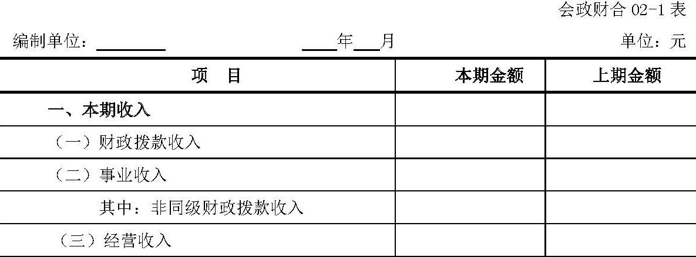
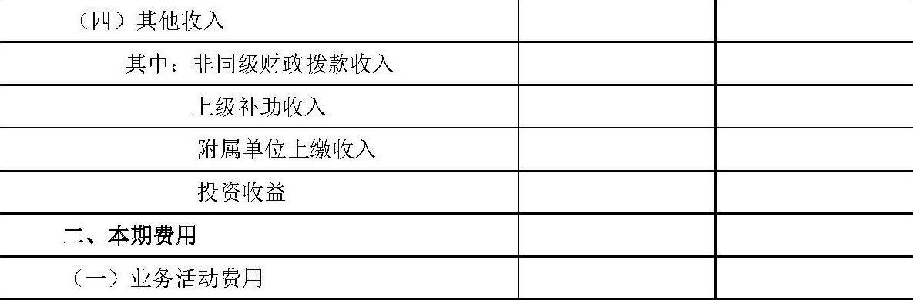
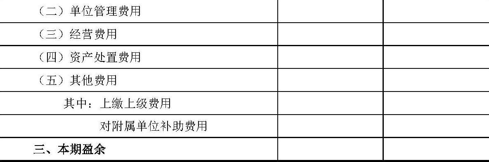
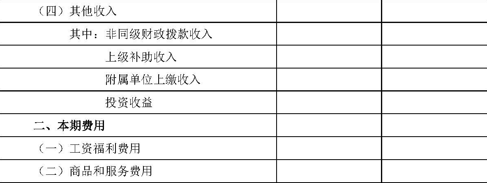
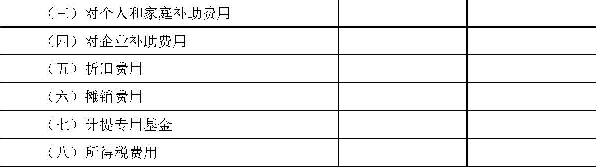
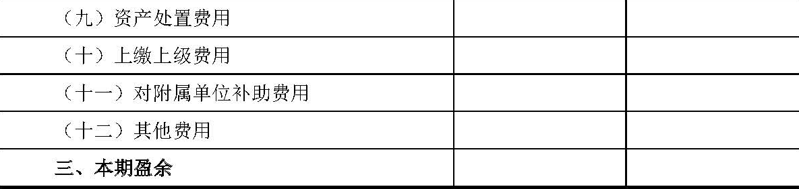

政府会计准则第X号——财务报表编制和列报（征求意见稿）
第一章 总则
第一条 为了规范政府会计主体财务报表的编制和列报，根据《政府会计准则——基本准则》，制定本准则。
第二条 财务报表是对政府会计主体财务状况、运行情况和现金流量等信息的结构性表述。财务报表至少包括下列组成部分：
（一）资产负债表；
（二）收入费用表；
（三）附注。
政府会计主体可以根据实际情况自行选择编制现金流量表。
第三条 本准则适用于政府会计主体个别财务报表和合并财务报表。行政事业单位个别财务报表的编制和列报，还应遵循《政府会计制度——行政事业单位会计科目和报表》的规定；其他政府会计主体个别财务报表的编制和列报，还应遵循其他相关会计制度。
第二章 基本要求
第四条 政府会计主体应当以持续运行为基础，根据实际发生的经济业务或事项，按照政府会计准则制度的规定进行确认和计量，在此基础上编制财务报表。政府会计主体不应以附注披露代替确认和计量，不恰当的确认和计量也不能通过充分披露相关会计政策而纠正。
如果按照政府会计准则制度规定披露的信息不足以让报表使用者了解特定经济业务或事项对政府会计主体财务状况和运行情况的影响时，政府会计主体还应当披露其他的必要信息。
第五条 除现金流量表按照收付实现制原则编制外，政府会计主体应当按照权责发生制原则编制财务报表。
第六条 财务报表项目的列报应当在各个会计期间保持一致，不得随意变更，但下列情况除外：
（一）政府会计准则制度要求改变财务报表项目的列报；
（二）政府会计主体业务性质发生重大变化或对政府会计主体影响较大的经济业务或事项发生后，在符合政府会计准则制度规定的前提下，变更财务报表项目的列报能够提供更可靠、更相关的会计信息。
第七条 性质或功能不同的项目，应当在财务报表中单独列报，但不具有重要性的项目除外。
性质或功能类似的项目，其所属类别具有重要性的，应当按其类别在财务报表中单独列报。
某些项目的重要性程度不足以在资产负债表、收入费用表等报表中单独列示，但对附注具有重要性的，则应当在附注中单独披露。
第八条 重要性，是指在合理预期下，财务报表某些项目的省略或错报会影响使用者据此作出决策的，该项目具有重要性。
重要性应当根据政府会计主体所处的具体环境，从项目的性质和金额两方面予以判断，且对各项目重要性的判断标准一经确定，不得随意变更。判断项目性质的重要性，应当考虑该项目在性质上是否显著影响政府会计主体的财务状况和运行情况等因素；判断项目金额大小的重要性，应当考虑该项目金额占资产总额、负债总额、净资产总额、收入总额、费用总额、盈余总额等直接相关项目金额的比重或所属报表单列项目金额的比重。
第九条 财务报表中的资产项目和负债项目的金额、收入项目和费用项目的金额不得相互抵销，但其他政府会计准则另有规定的除外。
资产或负债项目按扣除备抵项目后的净额列示，不属于抵销。
第十条 当期财务报表的列报，至少应当提供所有列报项目上一个可比会计期间的比较数据，以及与理解当期财务报表相关的说明，但其他政府会计准则制度另有规定的除外。
第十一条 政府会计主体应当在财务报表的显著位置至少披露下列各项：
（一）编报主体的名称。
（二）资产负债表日或财务报表涵盖的会计期间。
（三）人民币金额单位。
（四）财务报表是合并财务报表的，应当予以标明。
第十二条 政府会计主体至少应当按年编制财务报表。
年度财务报表涵盖的期间短于一年的，应当披露年度财务报表的涵盖期间、短于一年的原因以及报表数据不具可比性的事实。
第三章 合并财务报表
第十三条 合并财务报表，是指反映合并主体和其全部被合并主体形成的报告主体整体财务状况与运行情况的财务报表。
合并主体，是指有一个或一个以上被合并主体的政府会计主体。
被合并主体，是指符合本准则规定的纳入合并主体合并范围的会计主体。
合并财务报表至少应当包括下列组成部分：
（一）合并资产负债表；
（二）合并收入费用表；
（三）附注。
第十四条 合并财务报表按照合并级次分为部门（单位）合并财务报表、本级政府合并财务报表和行政区政府合并财务报表。
部门（单位）合并财务报表，是指以政府部门（单位）本级作为合并主体，将部门（单位）及其合并范围内会计主体的财务报表进行合并后形成的，反映部门（单位）整体财务状况与运行情况的财务报表。
本级政府合并财务报表，是指以本级政府财政总会计作为合并主体，将本级政府财政总会计及其合并范围内会计主体的财务报表进行合并后形成的，反映本级政府整体财务状况与运行情况的财务报表。
行政区政府合并财务报表，是指以行政区本级政府作为合并主体，将本行政区内各级政府的财务报表进行合并后形成的，反映本行政区政府整体财务状况与运行情况的财务报表。
第十五条 部门（单位）合并财务报表由部门（单位）负责编制；本级政府合并财务报表由本级政府财政部门负责编制。
各级政府财政部门既负责编制本级政府合并财务报表，也负责编制本级政府所辖行政区政府合并财务报表。
第一节 合并程序
第十六条 合并财务报表应当以合并主体和其被合并主体的财务报表为基础，根据其他有关资料加以编制。
合并财务报表的编制采用权责发生制基础。合并范围内被合并主体个别财务报表未采用权责发生制基础的，应当先调整为权责发生制基础的财务报表，然后再进行合并。
编制合并财务报表时，应当将合并主体和其全部被合并主体视为一个会计主体，遵循政府会计准则制度规定的统一的会计政策。合并范围内被合并主体个别财务报表未遵循政府会计准则制度规定的统一会计政策的，应当先调整为遵循统一会计政策的财务报表，然后再进行合并。
有关被合并主体财务报表调整的办法或操作指南由财政部另行规定。
第十七条 编制合并财务报表的程序主要包括：
（一）根据本准则第十六条规定，对需要进行调整的个别财务报表进行调整，以调整后的个别财务报表作为编制合并财务报表的基础；
（二）将合并主体和被合并主体个别财务报表中的资产、负债、净资产、收入和费用项目进行逐项合并；
（三）抵销合并主体和被合并主体之间、被合并主体相互之间发生的债权债务、收入费用等内部业务或事项对财务报表的影响。
在对内部业务或事项进行抵销时，不考虑合并主体和被合并主体之间、被合并主体相互之间出售物品（或提供劳务）或其他方式形成的存货、固定资产、无形资产等所包含的未实现内部出售损益。
第十八条 对于在报告期内因划转而纳入合并范围的被合并主体，应当视同其从期初就纳入合并范围，将其期初资产、负债和净资产项目金额包括在合并资产负债表的期初数中。
对于在报告期内因划转而不再纳入合并范围的被合并主体，应当视同其从期初就不纳入合并范围，其期初资产、负债和净资产项目金额不包括在合并资产负债表的期初数中。
在报告期内，被合并主体撤销的，其期初资产、负债和净资产项目金额应当包括在合并资产负债表的期初数中。
第十九条 对于在报告期内因划转而纳入合并范围的被合并主体，应当视同其从期初就纳入合并范围，将其报告期内的收入、费用项目金额包括在合并收入费用表的本期数中。
对于在报告期内因划转而不再纳入合并范围的被合并主体，应当视同其从期初就不纳入合并范围，其报告期内的收入、费用项目金额不包括在合并收入费用表的本期数中。
在报告期内，被合并主体撤销的，其期初至撤销日的收入、费用项目金额应当包括在合并收入费用表的本期数中。
第二十条 在编制合并财务报表时，被合并主体除了应当向合并主体或编制部门提供财务报表外，还应当提供下列有关资料：
（一）采用的与政府会计准则制度规定的统一的会计政策不一致的会计政策及其影响金额；
（二）其与合并主体、其他被合并主体之间发生的所有内部业务或事项的相关资料；
（三）编制合并财务报表所需要的其他资料。
第二节 部门（单位）合并财务报表
第二十一条 部门（单位）合并财务报表的合并范围应当以财政预算领拨关系为基础予以确定。有下级预算单位的部门（单位）为合并主体，其下级预算单位为被合并主体。合并主体应当将其全部被合并主体纳入合并财务报表的合并范围。
下级单位与上级部门（单位）不存在预算领拨关系但存在行政隶属关系的，也应当纳入上级部门（单位）合并财务报表的合并范围。
第二十二条 部门（单位）合并资产负债表应当以部门（单位）本级和其被合并主体符合本准则第十六条要求的资产负债表为基础，在抵销内部业务或事项对合并资产负债表的影响后，由部门（单位）本级合并编制。
编制部门（单位）合并资产负债表时需要抵销的内部业务或事项包括：
（一）部门（单位）本级和其被合并主体之间、被合并主体相互之间的债权（含应收账款坏账准备，下同）、债务项目；
（二）部门（单位）本级和其被合并主体之间、被合并主体相互之间其他业务或事项对部门（单位）合并资产负债表的影响。
第二十三条 部门（单位）合并资产负债表中的资产和负债，应当分别按流动资产和非流动资产、流动负债和非流动负债列示。
第二十四条 部门（单位）合并资产负债表中的资产类至少应当单独列示反映下列信息的项目：
（一）货币资金；
（二）短期投资；
（三）财政应返还额度；
（四）应收及预付款项；
（五）存货；
（六）一年内到期的非流动资产；
（七）长期投资；
（八）固定资产净值；
（九）在建工程；
（十）无形资产净值；
（十一）研发支出；
（十二）公共基础设施净值；
（十三）政府储备物资；
（十四）文化文物资产；
（十五）保障性住房净值；
（十六）待处理财产损溢。
第二十五条 部门（单位）合并资产负债表中的资产类至少应当包括流动资产、非流动资产和资产的合计项目。
第二十六条 部门（单位）合并资产负债表中的负债类至少应当单独列示反映下列信息的项目：
（一）短期借款；
（二）应交税费；
（三）应缴财政款；
（四）应付及预收款项；
（五）应付职工薪酬；
（六）应付政府补贴款；
（七）一年内到期非流动负债；
（八）长期借款；
（九）长期应付款；
（十）预计负债。
第二十七条 部门（单位）合并资产负债表中的负债类至少应当包括流动负债、非流动负债和负债的合计项目。
第二十八条 部门（单位）合并资产负债表中的净资产类至少应当单独列示反映下列信息的项目：
（一）累计盈余；
（二）专用基金；
（三）权益法调整。
第二十九条 部门（单位）合并资产负债表中的净资产类应当包括净资产的合计项目。
第三十条 部门（单位）合并资产负债表应当列示资产总计项目、负债和净资产总计项目。
第三十一条 部门（单位）合并收入费用表应当以部门（单位）本级和其被合并主体符合本准则第十四条要求的收入费用表为基础，在抵销内部业务或事项对合并收入费用表的影响后，由部门（单位）本级合并编制。
编制部门（单位）合并收入费用表时，需要抵销的事项包括部门（单位）本级和被合并主体之间、被合并主体相互之间的收入、费用项目。
第三十二条 部门（单位）合并收入费用表中对收入应当按照收入来源进行分类列示。
第三十三条 部门（单位）合并收入费用表中的收入类至少应当单独列示反映下列信息的项目：
（一）财政拨款收入；
（二）事业收入；
（三）经营收入；
（四）其他收入。
第三十四条 部门（单位）合并收入费用表中的收入类应当包括收入的合计项目。
第三十五条 部门（单位）合并收入费用表中对费用应当按照功能进行分类列示，同时应当按照费用的性质进行分类列示。
第三十六条 部门（单位）合并收入费用表中的费用类按照功能至少应当单独列示反映下列信息的项目：
（一）业务活动费用；
（二）单位管理费用；
（三）经营费用；
（四）资产处置费用；
（五）其他费用。
第三十七条 部门（单位）合并收入费用表中的费用类按照性质至少应当单独列示反映下列信息的项目：
（一）工资和福利费用；
（二）商品和服务费用；
（三）对个人和家庭补助费用；
（四）对企业补助费用；
（五）折旧费用；
（六）摊销费用；
（七）计提专用基金；
（八）所得税费用；
（九）资产处置费用；
（十）上缴上级费用；
（十一）对附属单位补助费用；
（十二）其他费用。
第三十八条 部门（单位）合并收入费用表中的费用类应当包括费用的合计项目。
第三十九条 部门（单位）合并收入费用表应当列示本期盈余项目。
本期盈余，是指部门（单位）某一会计期间收入合计金额减去费用合计金额后的差额。
第三节 本级政府合并财务报表
第四十条 本级政府合并财务报表的合并范围应当以财政预算领拨关系为基础予以确定。本级政府财政总会计为合并主体，其所属部门（单位）和资金基金等为被合并主体。
本级政府合并财务报表的具体合并范围由财政部另行规定。
第四十一条 本级政府合并财务报表应当以本级政府财政总会计和其被合并主体符合本准则第十六条要求的财务报表或合并财务报表为基础，在抵销内部业务或事项对合并财务报表的影响后，由本级政府财政部门负责编制。
编制本级政府合并财务报表时，需要按照本准则第十六条规定进行调整的被合并主体个别财务报表包括财政总预算会计报表和资金基金类财务报表（会计报表）。
编制本级政府合并财务报表时，需要抵销的内部业务或事项包括：
（一）财政总会计与部门（单位）之间、财政总会计与资金基金之间的债权债务、收入费用项目。
（二）部门（单位）相互之间的债权债务、收入费用项目。
第四十二条 本级政府合并资产负债表中的资产和负债，应当分别按流动资产和非流动资产、流动负债和非流动负债列示。
第四十三条 本级政府合并资产负债表中的资产类至少应当单独列示反映下列信息的项目：
（一）货币资金；
（二）短期投资；
（三）应收及预付款项；
（四）存货；
（五）一年内到期的非流动资产；
（六）长期投资；
（七）应收转贷款；
（八）固定资产净值；
（九）在建工程；
（十）无形资产净值；
（十一）政府储备物资；
（十二）公共基础设施净值；
（十三）保障性住房净值；
（十四）文物文化资产。
第四十四条 本级政府合并资产负债表中的资产类至少应当包括流动资产、非流动资产和资产的合计项目。
第四十五条 本级政府合并资产负债表中的负债类至少应当单独列示反映下列信息的项目：
（一）应付短期政府债券；
（二）短期借款；
（三）应付及预收款项；
（四）应付职工薪酬；
（五）应付政府补贴款；
（六）一年内到期的非流动负债；
（七）应付长期政府债券；
（八）应付转贷款；
（九）长期借款；
（十）长期应付款。
第四十六条 本级政府合并资产负债表中的负债类至少应当包括流动负债、非流动负债和负债的合计项目。
第四十七条 本级政府合并资产负债表应当列示净资产项目。
第四十八条 本级政府合并资产负债表应当列示资产总计项目、负债和净资产总计项目。
第四十九条 本级政府合并收入费用表中对收入应当按照收入来源进行分类列示。
第五十条 本级政府合并收入费用表中的收入类至少应当单独列示反映下列信息的项目：
（一）税收收入；
（二）非税收入；
（三）事业收入；
（四）经营收入；
（五）投资收益；
（六）政府间转移性收入。
第五十一条 本级政府合并收入费用表中的收入类应当包括收入的合计项目。
第五十二条 本级政府合并收入费用表中对费用应当按照费用性质进行分类列示。
第五十三条 本级政府合并收入费用表中的费用类至少应当单独列示反映下列信息的项目：
（一）工资福利费用；
（二）商品和服务费用；
（三）对个人和家庭补助费用；
（四）对企事业单位补贴费用；
（五）政府间转移性费用；
（六）折旧费用；
（七）摊销费用；
（八）经营费用；
（九）资产处置费用；
（十）其他费用。
第五十四条 本级政府合并收入费用表中的费用类应当包括费用的合计项目。
第五十五条 本级政府合并收入费用表应当列示本期盈余项目。
第四节 行政区政府合并财务报表
第五十六条 行政区政府合并财务报表的合并范围一般应当以行政隶属关系为基础予以确定。行政区本级政府为合并主体，其所属下级政府为被合并主体。
第五十七条 县级以上政府应当编制本行政区政府合并财务报表。
第五十八条 行政区政府合并财务报表应当以本级政府及所属下级政府合并财务报表为基础，在抵销内部业务或事项对合并财务报表的影响后，由本级政府财政部门负责编制。
编制行政区政府合并财务报表时，需要抵销的内部业务或事项包括各级政府合并财务报表之间需要抵销的债权债务、收入费用等项目。
第五十九条 行政区政府合并财务报表包括合并资产负债表和合并收入费用表，其项目列示与本级政府合并财务报表一致。
第五节 附注
第六十条 合并财务报表附注一般应当披露下列信息：
（一）合并财务报表的编制基础。
（二）遵循政府会计准则制度、相关编报规则的声明。
（三）合并财务报表的合并主体、被合并主体清单，及其基本情况。
（四）被合并主体所采用的与政府会计准则制度规定不一致的会计政策，编制合并财务报表的处理方法及其影响。
（五）本期增加、减少被合并主体的基本情况及影响。
（六）合并财务报表重要项目明细信息及说明。
（七）未在合并财务报表中列示但对报告主体财务状况和运行情况有重大影响的事项的说明。
（八）需要说明的其他事项。
第四章 附则
第六十一条 部门（单位）年度合并资产负债表的格式参见本准则附录。本级政府合并财务报表和行政区合并财务报表的格式由财政部另行规定。
第六十二条 本准则自2019年1月1日起施行。
附录：部门（单位）合并财务报表格式
合并资产负债表



注：
1.本表中“应收及预付款项”项目应当根据个别资产负债表中“应收票据”“应收账款净额”“预付账款”“应收利息”“应收股利”“其他应收款净额”“待摊费用”项目金额的合计数填列。
2.本表中“长期投资”项目应当根据个别资产负债表中的“长期股权投资”和“长期债券投资”项目金额的合计数填列。
3.本表中“在建工程”项目应当根据个别资产负债表中的“在建工程”和“工程物资”项目金额的合计数填列。
4.本表中“应缴税费”项目应当根据个别资产负债表中的“应交增值税”和“其他应交税费”项目金额的合计数填列。
5.本表中“应付及预收款项”项目应当根据个别资产负债表中的“应付票据”“应付账款”“应付利息”“预收账款”“其他应付款”“预提费用”项目金额的合计数填列。
合并收入费用表（一）



注：
1.本表按照费用功能编制。
2.本表中“（四）其他收入”项目应当根据个别收入费用表中“非同级财政拨款收入”“上级补助收入”“附属单位上缴收入”“投资收益”“捐赠收入”“利息收入”“租金收入”“其他收入”项目金额的合计数填列。
3.本表中“（四）其他费用”项目应当根据个别收入费用表中“上缴上级费用”“对附属单位补助费用”“所得税费用”“其他费用”项目金额的合计数填列。
合并收入费用表（二）



注：
1.本表按照费用性质编制。
2.本表中“本期收入”各项目的填列方式同合并收入费用表（一）。
3.本表中“本期费用”各项目应当根据个别财务报表附注中“本期费用按照经济分类的披露格式”所提供的信息合并填列。